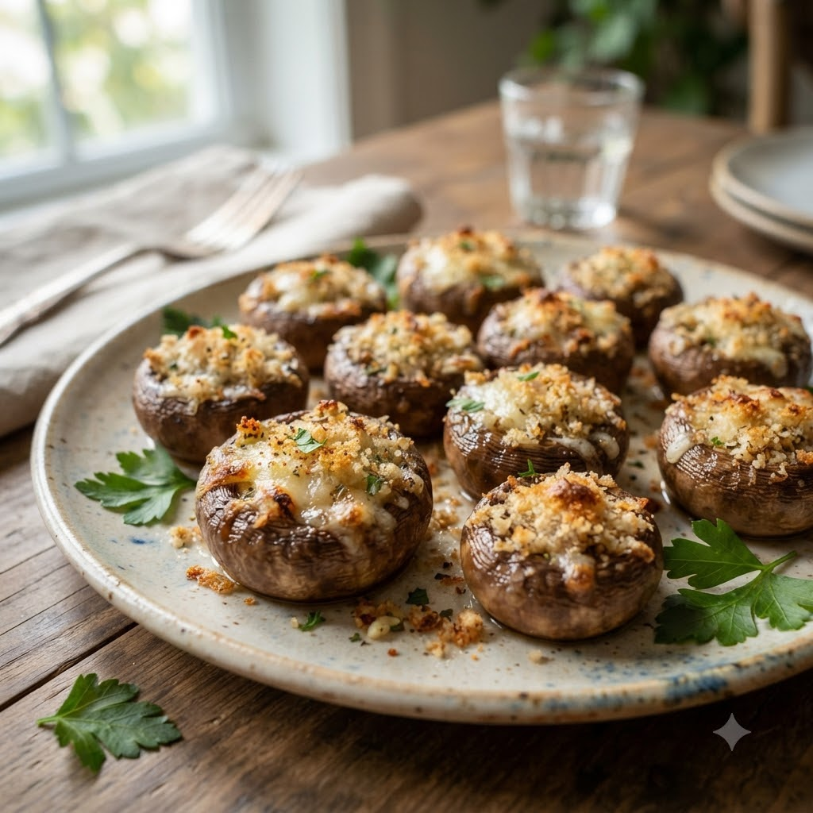

Stuffed Mushrooms

Stuffed Mushrooms
Airfryer – Bake 180°C 11 min — Serves 4
Ingredients
- 11 button mushrooms, stems removed
- 1/4 cup grated cheese
- 2 tbsp breadcrumbs
- 1 tsp garlic (lehsun), minced
- 1 tbsp chopped parsley
- Salt & pepper to taste
- Oil spray
Method
1Preheat: Preheat the Airfryer to 180°C for 4 minutes before adding the food to the basket.
2Mix cheese, breadcrumbs, garlic, parsley, salt and pepper.
3Spoon mixture into each mushroom cap.
4Arrange in the basket and spray lightly with oil.
5Bake at 180°C for 11 minutes until tops are golden and mushrooms are tender.